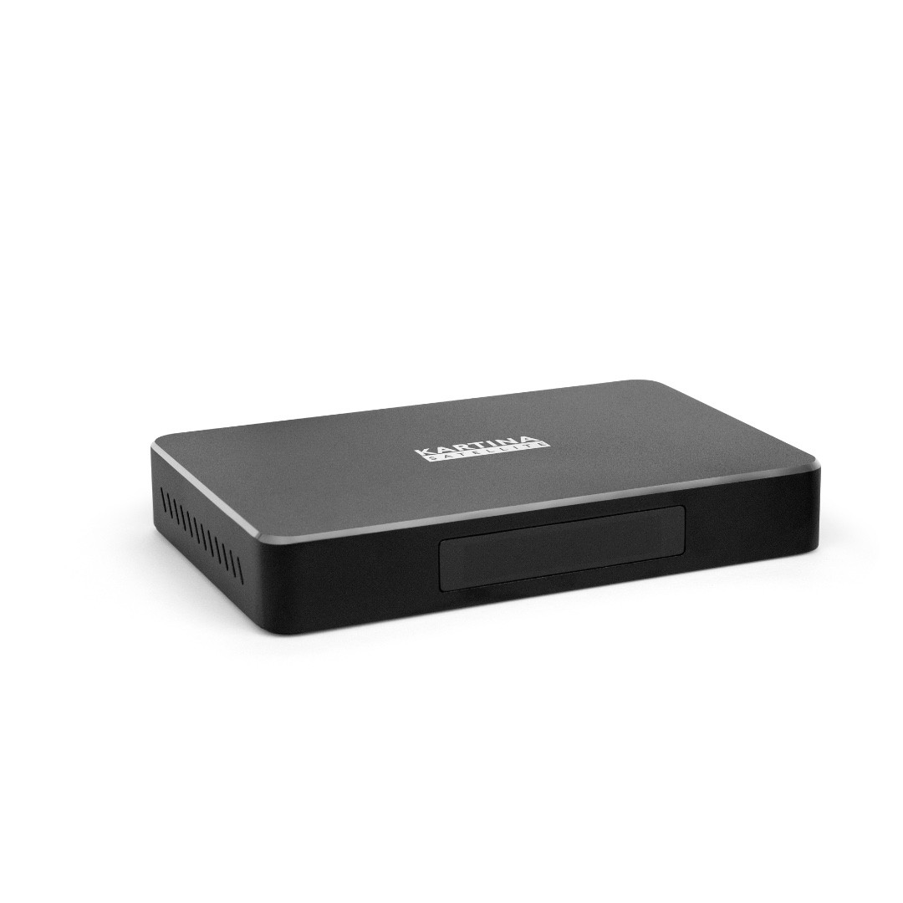

Знакомое меню от Dune HD и эффективность системы Android!
Kartina S – это ваш проводник в мир спутникового и интернет-телевидения!
Функции 2 в 1 - теперь смотреть каналы Kartina.TV и Satellite FTA-каналы
(каналы, транслируемые со спутников в открытом доступе) можно на одном устройстве.
Стильный современный дизайн – приставка производит яркое визуальное впечатление и
отвечает любому стилю Вашего интерьера.
Ускоренный отклик – благодаря увеличенному объёму оперативной памяти приставки до 2 ГБ,
вы забудете о долгом ожидании переключения канала или перехода к другому разделу в меню!
Обучаемый пульт – всего несколько простых шагов помогут сделать пульт от приставки универсальным!
Пользуйтесь одним пультом, чтобы управлять приставкой и Вашим телевизором!
Основные особенности
Операционная система Android
Автообновление каналов
Автоматическая настройка спутника
Классический интерфейс Dune HD
Поддержка видеокодека HEVC (H.265)
HDMI 2.0a: обеспечивает наилучшее качество видео и аудио
USB-порт: воспроизведение новейших форматов видео вплоть до 4Kp60 и HDR, музыки, фото с USB-носителей,
а также возможность ручного обновления прошивки
Полноценный веб-браузер
Комплект поставки
Приставка Kartina S
Адаптер питания
Пульт дистанционного управления
HDMI-кабель
Wi-Fi антенна
Батарейки AAA — 2 шт.
Краткое руководство

Технические характеристики
Процессор Amlogic S905D
Broadcom BCM43xx чипсет
ОС: Linux-based Dune HD Software + Android 6 + AOSP для Android-приложений
2 ГБ RAM
8 ГБ Flash-память
Wi-Fi: Dual Band 2.4 + 5.0 GHz 802.11b/g/n/ac
Ethernet 10/100 Mbps
HDMI 2.0a-выход
2× USB 2.0
Слот для карт памяти Micro SD
Bluetooth 4.x
Выход A/V 3.5 мм (composite video + analog stereo audio)
Kartina X полностью поддерживает весь функционал сервиса Kartina.TV.
Компактный размер
Ускоренный отклик меню
Стильный современный дизайн
Обучаемый пульт ДУ
Kartina X сочетает в себе привычное пользовательское меню Dune HD
и производительность системы Android.
Основные особенности
Операционная система Android
Классический интерфейс Dune HD
Обучаемый пульт ДУ
Поддержка видеокодека HEVC (H.265): улучшенное в 2 раза соотношение качества картинки
и необходимой скорости Интернет-канала
Новейший формат вещания DASH: автоматический выбор наилучшего качества картинки
в зависимости от скорости Интернет-канала (доступен в настройках Kartina.TV)
HDMI 2.0a: обеспечивает наилучшее качество видео и аудио
USB-порт: воспроизведение новейших форматов видео вплоть до 4Kp60 и HDR, музыки, фото с USB-носителей,
а также возможность ручного обновления прошивки